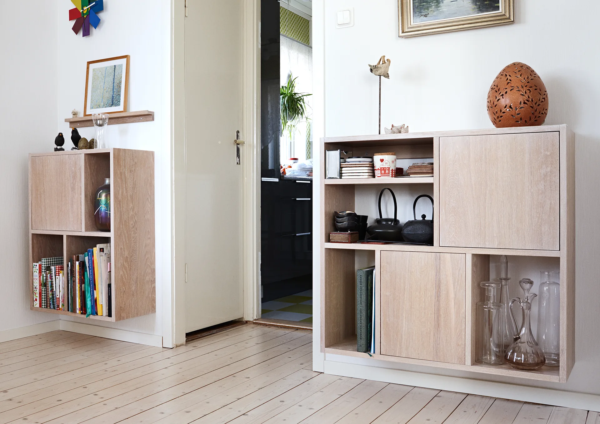
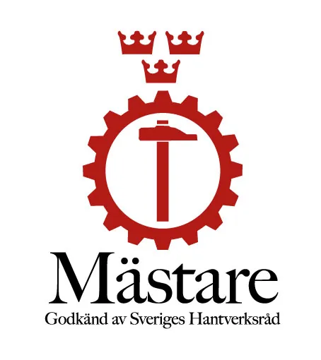
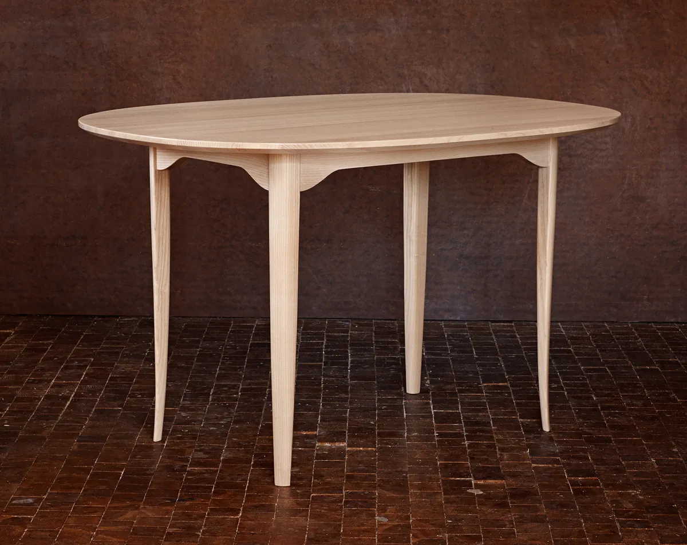
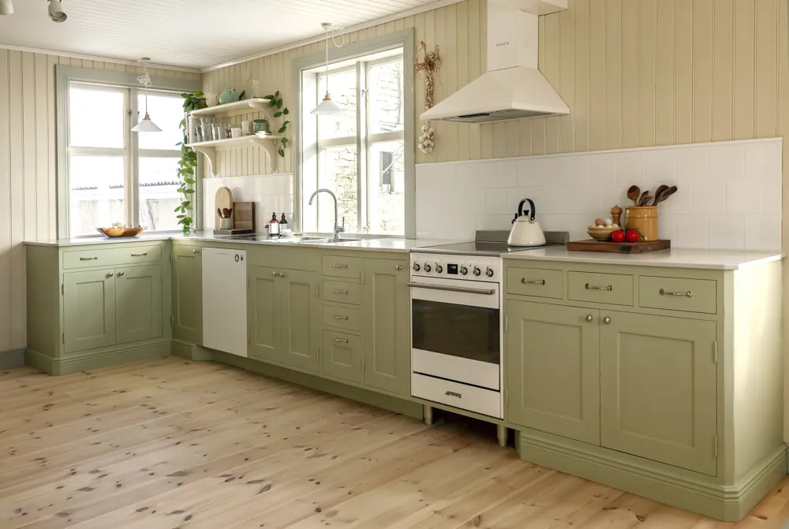
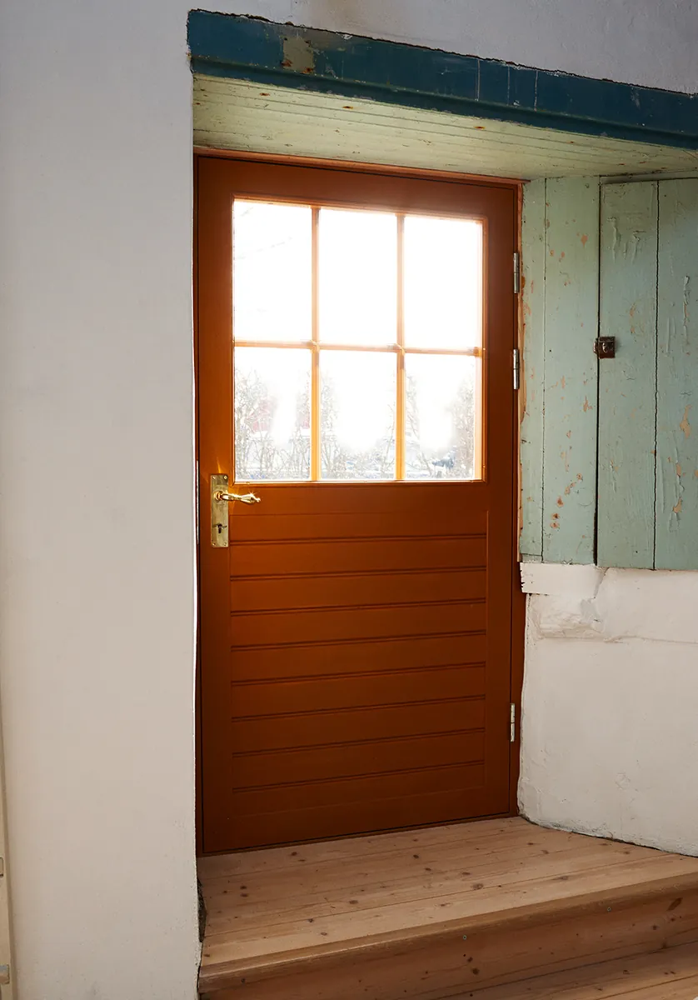
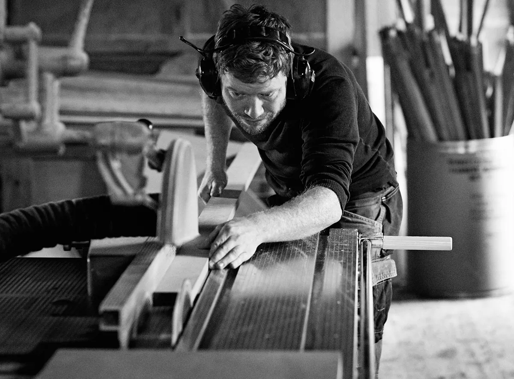

Vi är mycket nöjda med vår trappa!
Eleine, Öland
Trappa
Johannes Lindgren · Möbelsnickarmästare
Möbler och inredning som formas efter dig och ditt hus. Tillverkade i min verkstad på Öland.
Lindgren Möbelsnickeri
En bokhylla runt en dörr. Ett kök som tar vara på varje centimeter. Ett bord att samlas kring. Jag formger och tillverkar efter dina önskemål, husets förutsättningar och det liv som ska rymmas där.

MöbelsnickareVad jag gör

Enstycksmöbler, prototyper och mindre serier. Formgivna och tillverkade för att passa dig.
Se möbler
Platsbyggda kök, garderober, bokhyllor och inredning för hem och offentliga miljöer.
Se inredning
Trappor, dörrar och fönster där husets karaktär får vara med och bestämma.
Se specialsnickerier
Händerna bakom hantverket
Jag är möbelsnickarmästare och driver ett litet snickeri i Mörbylånga. Här börjar varje arbete med ett samtal, och det får gärna vara om en idé som ännu bara finns på en servett.
Jag hjälper dig från formgivning till tillverkning. Ditt hus, dina behov och de små detaljerna får styra – snarare än färdiga standardmått.
Möt JohannesPlatsbyggda kök
Ord från kunderna
Vi är mycket nöjda med vår trappa!
Eleine, Öland
Trappa…underbart vackert.
Kerstin, Växjö
Soffbord i ask och öländsk kalkstenVi är så nöjda med köket!
Nils, Öland
Platsbyggt kökUtdrag ur kundomdömen på Lindgren Möbelsnickeris tidigare hemsida.
En bra början
En skiss, en ritning eller något du gått och funderat på. Ring eller skriv, så pratar vi om hur vi kan göra det möjligt.